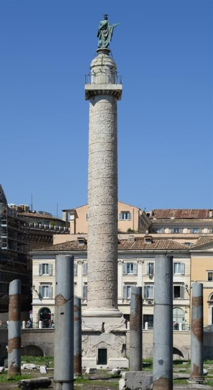

Факт №1
Слово «Румыния» происходит от латинского «Romanus», что означает римлянин (гражданин Рима).
Факт №2
Завоевав даков (живших в то время в Румынии) в начале второго века нашей эры, они отступили к концу третьего века нашей эры. Тем временем римляне и даки смешались и вступили в брак, и румынский язык развился.
Факт №3
Одна из самых удивительных археологических реликвий римлян – колонна Траяна высотой 126 футов со статуей Траяна наверху. Он сохранился нетронутым почти два тысячелетия. Факты о Румынии 4 Колонна Траяна представляет собой замечательную запись кампании даков со 155 различными сценами, высеченными на камне.
